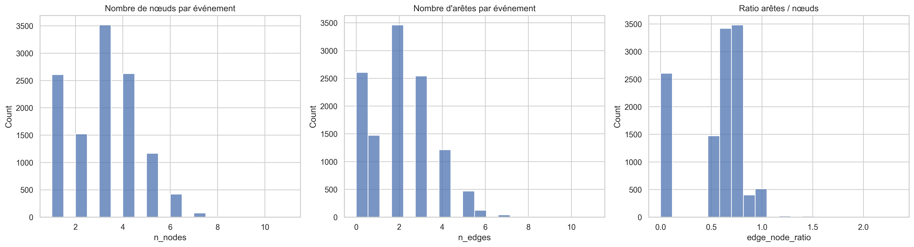
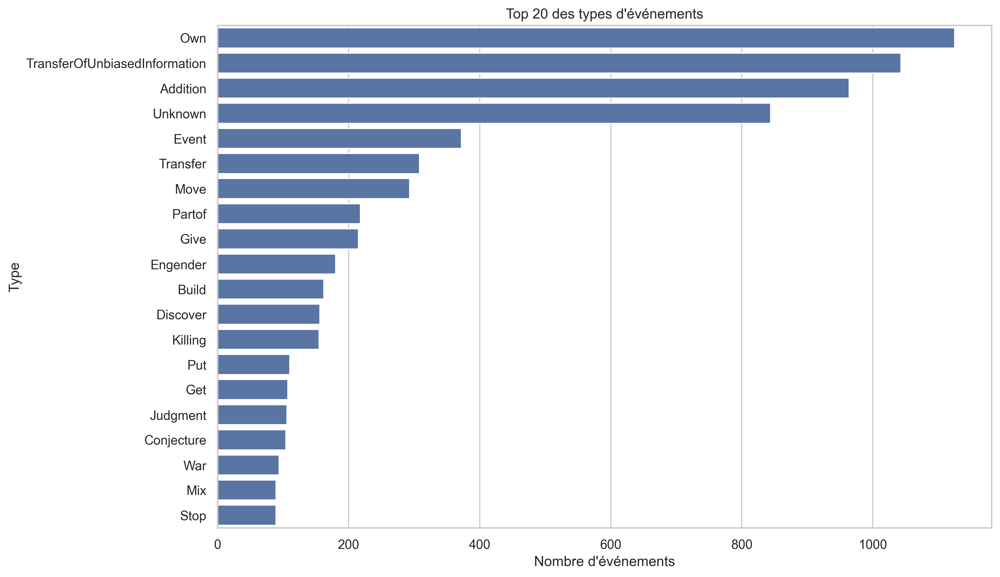
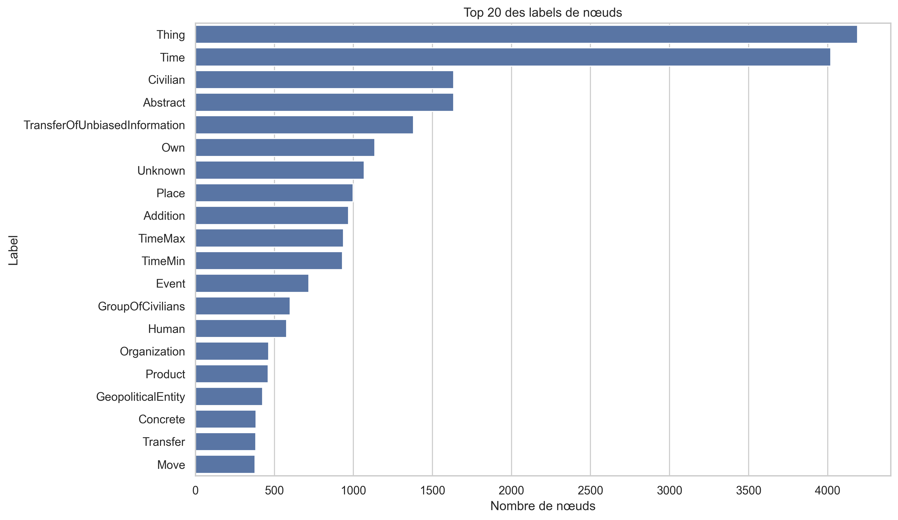
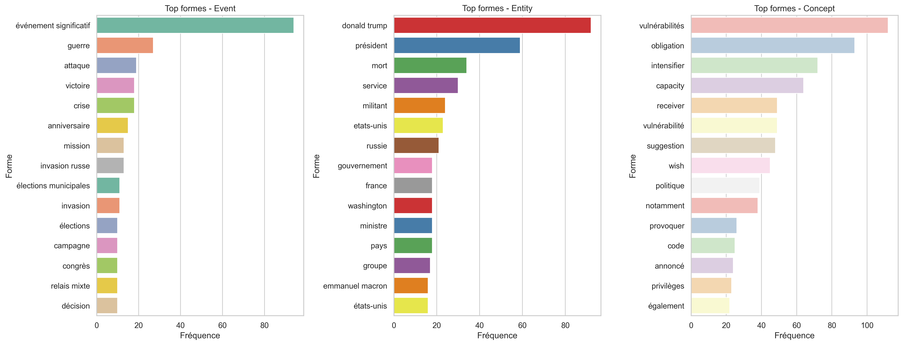
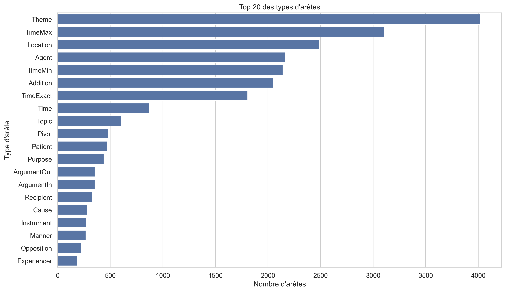
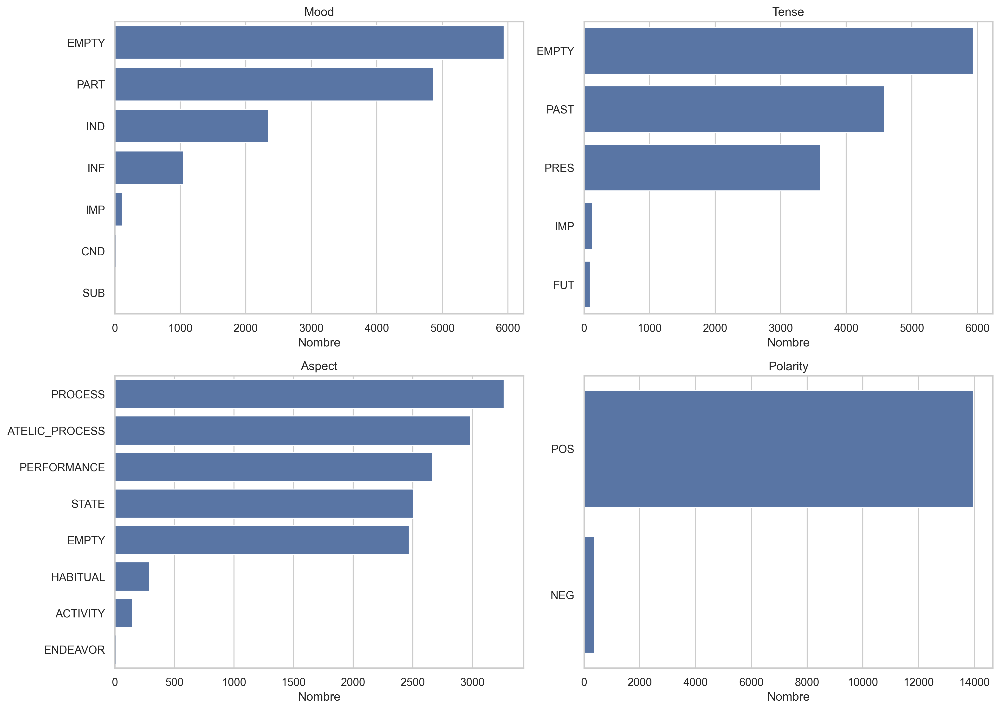
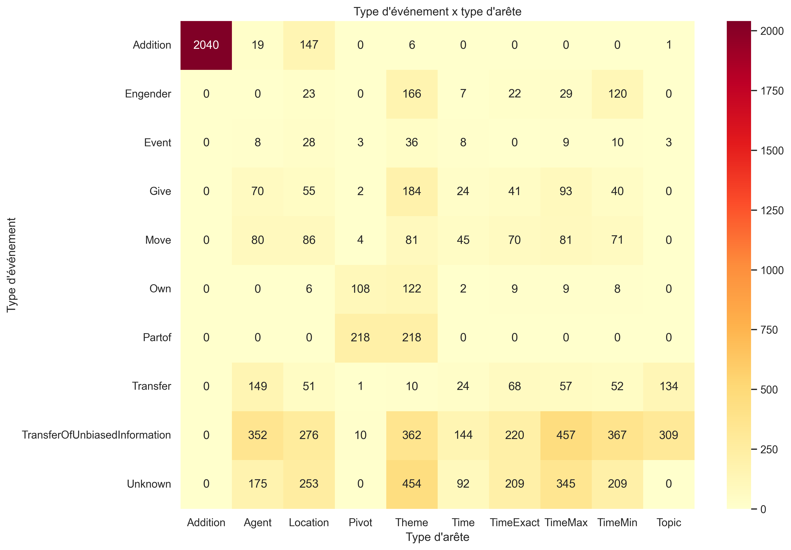
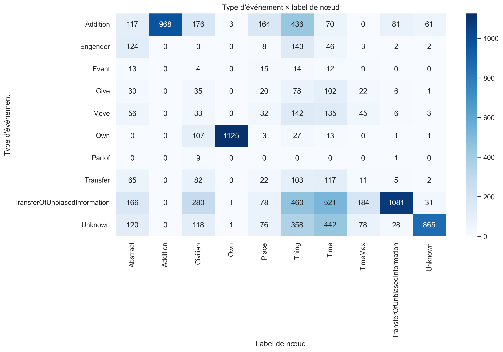

Le dépôt réunit l’exploration de données, le scoring d’anomalies, la détection de quasi-doublons,
plusieurs approches de clustering et maintenant un module dédié à la correction des lieux.
Cette interface centralise les principaux éléments de lecture, d'analyse et de correction
appliqués aux graphes de connaissance extraits par PREVYO.
2 273 articles reconstruits, 659 clusters actifs et plus d’un millier de relations de quasi-doublons.
Le dépôt couvre l’EDA, la détection d’anomalies, la similarité, le clustering multi-approche et la correction des données.
Indicateurs du dataset chargé
Événements
—
Articles
—
Alertes
—
Clusters
—
01
Lecture et normalisation
Les notebooks EDA partent des exports Mongo, restructurent les champs techniques et reconstruisent le contexte local autour de chaque événement.
02
Scoring et regroupements
Le dépôt combine anomalies structurelles, similarité sémantique, clustering d’events et clustering d’articles selon plusieurs méthodes.
03
Inspection et correction
Le graphe interactif sert à inspecter, le 4e onglet prépare la correction de lieux, et les dashboards annexes aident à comprendre les familles d’erreurs.
—
Événements annotés dans le dataset actif
—
Articles reconstruits via resultAnalyseId
—
Événements critiques détectés
—
Liens de quasi-doublons disponibles
Contexte
Une plateforme de lecture, d'analyse et d'aide à la décision
Cette interface réunit les principaux livrables du projet dans une lecture cohérente:
compréhension du corpus, qualification des anomalies, repérage des similarités, analyse des regroupements
et préparation des correctifs sur les graphes de connaissance produits par PREVYO.
De PREVYO à la supervision qualité
EMVISTA / PREVYO extrait des événements, entités, lieux, dates et relations depuis des sources textuelles.
Le site consolide ce travail en une démonstration structurée, pensée pour présenter le contexte,
les analyses produites sur le corpus et les leviers d'action disponibles pour améliorer la qualité du graphe.
Densité moyenne—
Couverture domaine—
Axe 1 · Détection d’anomalies
Le scoring s’appuie sur des features hybrides : embeddings, structure des sous-graphes et profondeur taxonomique.
Le résultat combine un score global et un signal local pour distinguer normal, suspect et critique.
Axe 2 · Similarité & clustering
Le dépôt contient un clustering au niveau événement, un clustering reconstruit au niveau article
et une version avancée qui compare HDBSCAN, NMF et Louvain pour documenter les regroupements.
Pipeline
Six étapes lisibles, depuis les notebooks jusqu’aux outils d’action
Cette vue synthétise les briques d'analyse et de correction mobilisées pour passer de l'export brut
à une lecture exploitable du graphe de connaissance.
01
EDA & parsing
Lecture des exports, normalisation Mongo, premiers profils statistiques et contrôle de la structure des graphes.
02
Reconstruction contexte
Assemblage des sous-graphes locaux, relecture par événement et graphe de contexte pour comprendre l’environnement de chaque cas.
03
Score anomalie
Isolation Forest + score local de voisinage sémantique, puis explications textuelles et niveaux d’alerte.
04
Quasi-doublons
Embeddings MiniLM, similarité cosinus, fusion stricte et rapports de déduplication pour nettoyer les événements proches.
Graphe interactif, dashboards d’analyse, rapport technique et module beta de correction des anomalies de lieux.
Cartographie du dépôt
Les briques projet remises au bon niveau dans l’interface
Cette sélection met en avant les notebooks, scripts et modules qui structurent la démarche analytique
et la chaîne de traitement du projet.
Accès directs
Accéder rapidement aux modules de démonstration
Chaque entrée donne accès à un niveau de lecture complémentaire:
exploration du graphe, tableau de bord analytique ou correction ciblée.
Atlas analytique
Visualisation, repères métier et réemploi des analyses du dépôt
Cet espace réunit les principaux indicateurs du corpus et les visualisations utiles à l'analyse:
niveaux d'alerte, typologies d'événements, structures de sous-graphes, clusters et similarités.
Dataset actif enrichiCroisement anomalies / clusters / similaritéRéemploi des figures exploratoires du dépôt
Chargement des indicateurs du dataset actif…
—
Événements
—
Alertes
—
Events quasi
—
Articles
—
Clusters
Signal critique—
Volume immédiatement prioritaire pour une revue humaine ou une correction de qualité.
Quasi-doublons—
Liens similaires déjà exploitables dans le graphe fusionné et la lecture qualité.
Densité du graphe—
Moyenne des noeuds par événement pour mesurer la complexité des sous-graphes extraits.
Couverture métier—
Part des événements déjà enrichis par les champs métier utiles à l’analyse aval.
Type dominant—
Le type le plus fréquent ressort comme repère utile pour lire les regroupements et distributions.
📁
Chargez ou laissez le site ouvrir export.events.clean.json
pour alimenter cette page avec les données enrichies du projet.
Top types d’événements
Lecture rapide des familles d’événements les plus présentes dans le dataset actif.
Niveaux d’alerte
Répartition entre normal, suspect et critique sur les événements annotés.
Articles les plus exposés
Articles avec le plus de signaux suspects / critiques dans le dataset chargé.
Histogramme des scores d’anomalie
Distribution continue des scores pour mieux voir la coupure entre normal, suspect et critique.
Clusters les plus peuplés
Regroupements dominants présents dans les annotations de clustering.
Complexité des sous-graphes
Distribution du nombre de noeuds par événement.
Relations sémantiques
Types d’arêtes les plus fréquents dans les sous-graphes extraits.
Top labels de noeuds
Lecture synthétique des catégories d’entités qui structurent le graphe.
Treemap
Navigation hiérarchique dans les taxonomies et métadonnées
La treemap D3 permet de basculer rapidement entre type, domaine, risque, labels de noeuds et types d’arêtes.
Les graphiques exploratoires qui méritaient d’être remontés dans l’interface
Cette galerie réutilise directement les visuels générés pendant l’analyse exploratoire pour éviter qu’ils restent enfouis dans le dépôt.

Distribution graphique globale
Vue macro sur la structure du dataset et la dispersion des observations sur le graphe de connaissances.

Top types d’événements
Complément utile aux charts dynamiques pour replacer la hiérarchie des classes métiers observées pendant l’EDA.

Top labels de noeuds
Repérage des familles d’entités qui dominent les sous-graphes et structurent les contextes extraits.

Formes dominantes par type
Très utile pour relier les conventions visuelles du graphe interactif aux grandes familles d’objets métier présentes dans le dépôt.

Top types d’arêtes
Lecture orientée relations sémantiques, utile pour comprendre pourquoi certains sous-graphes sont plus denses que d’autres.

Propriétés linguistiques
Signal complémentaire sur la matière textuelle qui sert ensuite au scoring, aux embeddings et aux regroupements.

Heatmap événements × arêtes
Carte technique très parlante pour repérer les relations dominantes et les combinaisons d’arêtes qui créent des sous-graphes atypiques.

Heatmap événements × noeuds
Vue plus technique pour repérer les zones de concentration et les structures atypiques dans la matrice événement / entité.
Modules sources
Dashboards et apps annexes qui nourrissent cette interface
Ces pages existent déjà dans le dépôt. Elles restent utiles comme références, comme modules spécialisés ou comme base pour de futurs onglets.
Module beta
Correction des anomalies de lieux
Cette version intègre le correcteur de lieux dans l’esthétique PREVYO, avec une hiérarchie visuelle plus lisible,
des cartes homogènes avec le reste du site, une meilleure mise en avant des actions de correction
et une continuité graphique avec les autres modules d’analyse.